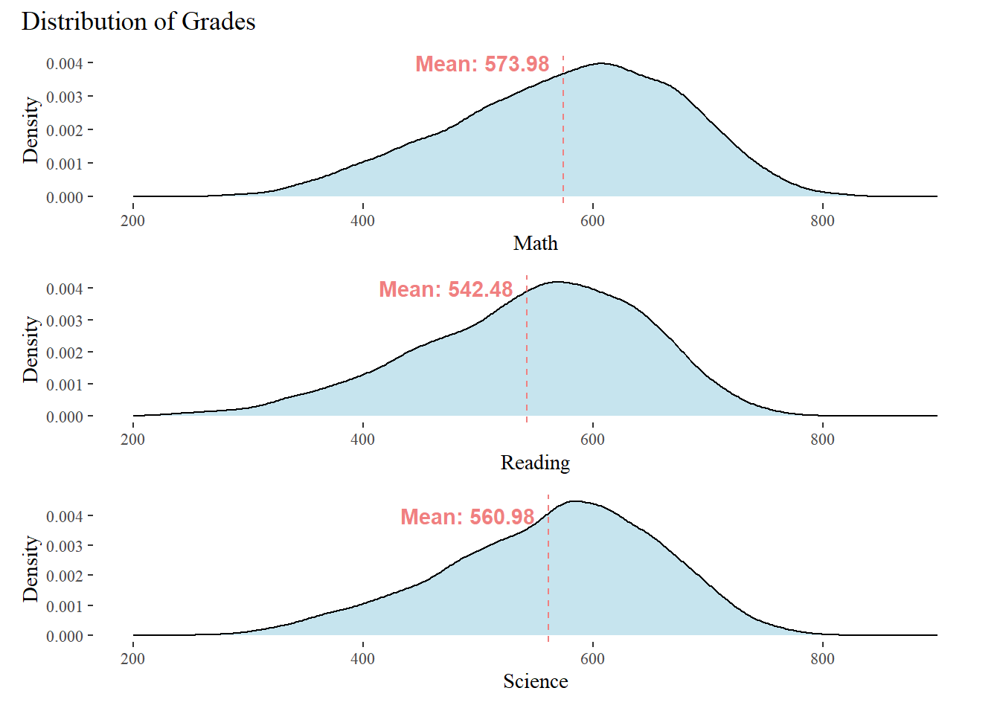
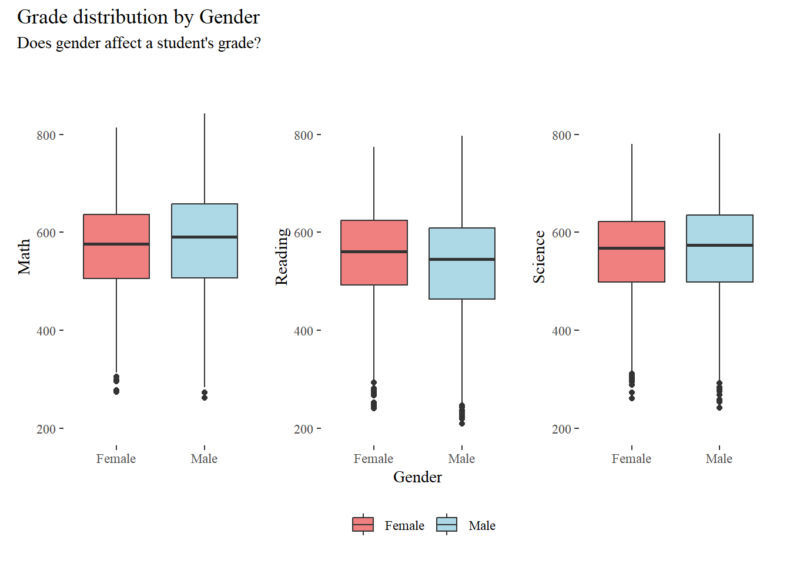
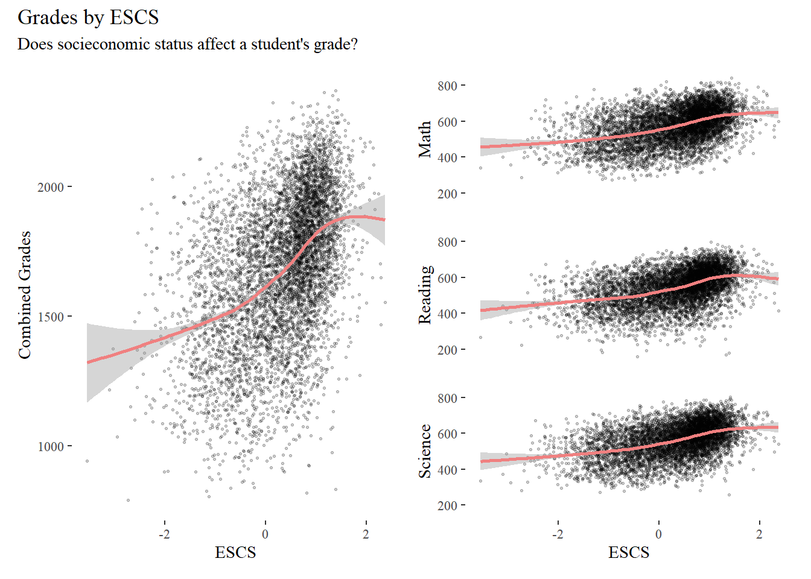
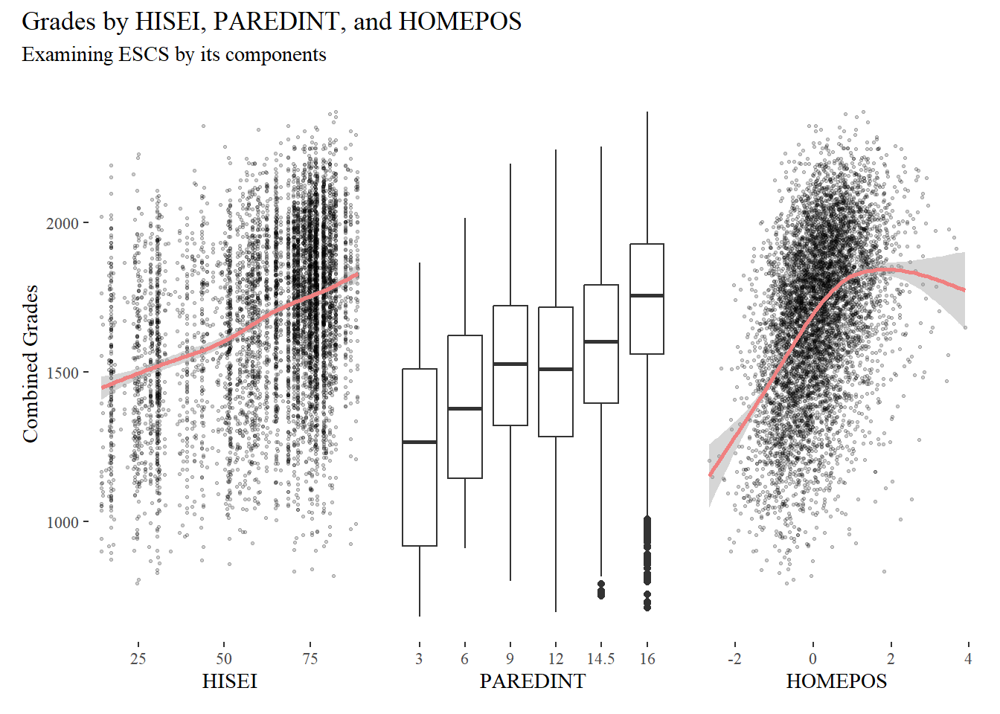
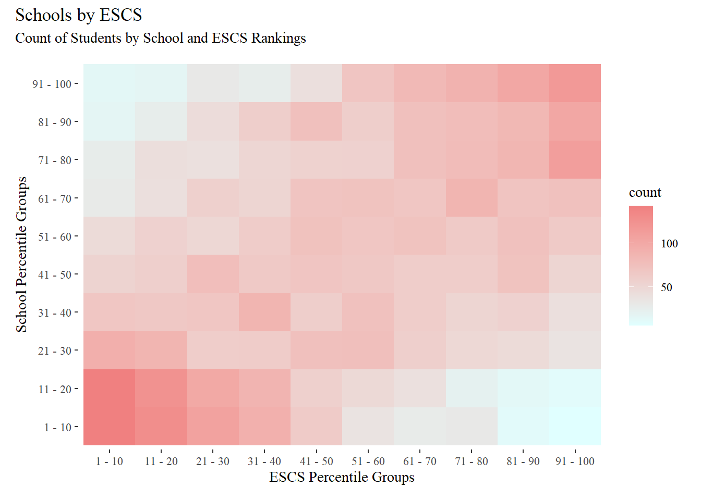

pacman::p_load(tidyverse, haven, ggplot2, patchwork, ggthemes, ggridges, ggdist)Take-home_Ex01
“Every School a Good School” Myth or Fact?
Let’s find out.

1. Overview
1.1 Setting the Scene
OECD education director Andreas Schleicher shared in a BBC article that “Singapore managed to achieve excellence without wide differences between children from wealthy and disadvantaged families.” (2016) Furthermore, several Singapore’s Minister for Education also started an “every school a good school” slogan. The general public, however, strongly belief that there are still disparities that exist, especially between the elite schools and neighborhood school, between students from families with higher socioeconomic status and those with relatively lower socioeconomic status and immigration and non-immigration families.
1.2 The Task
The 2022 Programme for International Student Assessment (PISA) data was released on December 5, 2022. PISA global education survey every three years to assess the education systems worldwide through testing 15 year old students in the subjects of mathematics, reading, and science.
In this exercise, we will use appropriate Exploratory Data Analysis (EDA) methods and ggplot2 functions to reveal:
the distribution of Singapore students’ performance in mathematics, reading, and science, and
the relationship between these performances with schools, gender and socioeconomic status of the students.
2. Setting up
2.1 Load R packages
We begin by loading the required R packages using the pacman::p_load() function from the pacman package.
2.2 Load Data
The data we are using can be found from the PISA 2022 Database. The database contains full set of responses from individual students, principals, and parents. In this task, we will only be looking at the students questionnaire data file. In particular, we are only interested in the data of students from Singapore.
In the following code chunk, the data set is first loaded into the environment, and filtered to only rows which country code is “SGP” before saving the data as a RData file for further use.
stu_qqq <- read_sas("data/cy08msp_stu_qqq.sas7bdat")
stu_qqq_SG <- stu_qqq %>% filter(CNT == "SGP")
write_rds(stu_qqq_SG, "data/stu_qqq_SG.rds")stu_qqq_SG <- read_rds("data/stu_qqq_SG.rds")3. Data Wrangling
In this section, we will filter out the data that we will be using for the EDA, and perform the required formatting and calculations. These data are:
- School
- Gender
- Grades
- Socioeconomic status
To begin, let’s create a data frame to store these data, with student ID as its initial column.
Show the code
# Create new data frame with student id as the initial column
df <- data.frame(stu_id = stu_qqq_SG$CNTSTUID)3.1 Schools
Schools are represented by their respective IDs in the data set. We will convert them to factor as schools are nominal data.
Show the code
# Assign school ids as factor
df$sch_id <- stu_qqq_SG$CNTSCHID %>% factor()
# Show summary
df %>%
group_by(sch_id) %>%
summarise(Count = length(sch_id))# A tibble: 164 × 2
sch_id Count
<fct> <int>
1 70200001 55
2 70200002 38
3 70200003 36
4 70200004 56
5 70200005 38
6 70200006 36
7 70200007 38
8 70200008 38
9 70200009 36
10 70200010 36
# ℹ 154 more rows3.2 Gender
Gender can be found directly in the data set. It is represented as 1 for Female and 2 for Male. Once again, we will convert them to factor and re-map them to Female and Male respectively.
Show the code
# Assign gender as factor and map them to Female and Male respectively
df$gender <- stu_qqq_SG$ST004D01T %>% factor(levels = c(1,2), labels = c("Female","Male"))
# Show summary
df %>%
group_by(gender) %>%
summarise(Count = length(gender))# A tibble: 2 × 2
gender Count
<fct> <int>
1 Female 3248
2 Male 33583.3 Students’ grades
For students grades, we will be looking at Plausible values provided in the data set. For each subject (Math, Reading, Science), there are 10 Plausible values given. These values are sampled from the likely distribution of the student’s grade. For visualization purposes, we will take the average of the Plausible values as a representative of that subject’s grade.
We will also create a combined_grades column which is simply the sum of all 3 grades to represent the holistic performance of the student in all 3 subjects.
Show the code
# Select columns with "PV" and "MATH" in name, and take their average
df$math_grades <- select(stu_qqq_SG, contains("PV")&contains("MATH")) %>% rowMeans() %>% as.numeric()
# Select columns with "PV" and "READ" in name, and take their average
df$read_grades <- select(stu_qqq_SG, contains("PV")&contains("READ")) %>% rowMeans() %>% as.numeric()
# Select columns with "PV" and "SCIE" in name, and take their average
df$science_grades <- select(stu_qqq_SG, contains("PV")&contains("SCIE")) %>% rowMeans() %>% as.numeric()
# Sum up the previous three grade columns
df$combined_grades <- df$math_grades + df$read_grades + df$science_grades
# Show summary
cols = c("math_grades", "read_grades", "science_grades", "combined_grades")
summary(df[cols]) math_grades read_grades science_grades combined_grades
Min. :262.6 Min. :158.6 Min. :242.0 Min. : 680.9
1st Qu.:506.2 1st Qu.:477.4 1st Qu.:498.9 1st Qu.:1483.9
Median :582.4 Median :553.6 Median :571.2 Median :1708.5
Mean :574.0 Mean :542.5 Mean :561.0 Mean :1677.4
3rd Qu.:648.4 3rd Qu.:616.1 3rd Qu.:629.3 3rd Qu.:1888.5
Max. :842.7 Max. :797.6 Max. :801.9 Max. :2369.7 3.4 Schools
As schools are identified only by id, it is difficult to make meaningful analysis based on other demographic factors individually. As such, we can group schools according to their students’ average combined grades. For our analysis, we will rank the schools according to their average combined grades of students’, and then create groups for school which produces the top 1-10th, 11-20th … 91-100th percentile of students.
Show the code
# Group by Schools and find average
df <- df %>% group_by(sch_id) %>% mutate(average_student_grades = mean(combined_grades))
# Rank and group schools according to the percentile of their average student grades
df$sch_rank <- ntile(desc(df$average_student_grades), n = 10) %>% as.factor()
# Show summary
head(df[, c("sch_id","average_student_grades", "sch_rank")], 10)# A tibble: 10 × 3
# Groups: sch_id [10]
sch_id average_student_grades sch_rank
<fct> <dbl> <fct>
1 70200052 1764. 3
2 70200134 1529. 9
3 70200112 1718. 3
4 70200004 1484. 9
5 70200152 1434. 10
6 70200043 1641. 6
7 70200049 1631. 6
8 70200107 1585. 7
9 70200012 1921. 2
10 70200061 1671. 5 3.5 Socioeconomic Status
Socioeconomic status is represented by the PISA index of Economic, Social, and Cultural Status (ESCS). It is the composite score of 3 other indicators, namely:
HISEI - Highest parental occupation status
PAREDINT - Highest parental education
HOMEPOS - Home possessions
To gain a more granular insight into Socioeconomic status on Grades, we will look into ESCS as well as its 3 components separately.
Similarly, we will also create groupings based on percentile ranking of ESCS scores.
Show the code
# Assign ESCS as numeric
df$escs <- stu_qqq_SG$ESCS %>% as.numeric()
# Assign HISEI as numeric
df$hisei <- stu_qqq_SG$HISEI %>% as.numeric()
# Assign PAREDINT as factor
df$paredint <- stu_qqq_SG$PAREDINT %>% as.factor()
# Assign HOMEPOS as numeric
df$homepos <- stu_qqq_SG$HOMEPOS %>% as.numeric()
# Rank and group students according to the percentile of their ESCS
df$escs_rank <- ntile(desc(df$escs), n = 10) %>% as.factor()
# Show summary
head(df[, c("hisei","paredint","homepos","escs", "escs_rank")], 10)# A tibble: 10 × 5
hisei paredint homepos escs escs_rank
<dbl> <fct> <dbl> <dbl> <fct>
1 30.3 16 0.752 0.184 7
2 77.1 14.5 0.784 0.826 4
3 17 12 0.0666 -1.04 10
4 43.3 12 -0.93 -0.961 10
5 75.5 14.5 -0.895 0.0856 7
6 57.6 16 -0.599 0.127 7
7 70.3 12 0.0975 -0.0154 7
8 80.8 16 0.799 1.16 2
9 65.1 16 2.23 1.47 1
10 56.4 16 0.384 0.520 5 4. EDA
4.1 Distribution of Grades
We begin the analysis by plotting the distribution of the three subjects: Math, Reading, and Science. On average, students perform better in Math and Science as compared to Reading.
Show the code
# Create density plot for Math Grades with Mean line
g01 <- ggplot(na.omit(df)) +
geom_density(alpha=.7, aes(x=math_grades),
fill = "lightblue") +
xlim(200, 900) +
xlab("Math") +
ylab("Density") +
geom_vline(xintercept = mean(df$math_grades),
colour = "lightcoral",
linetype = "dashed") +
annotate(
geom = "text",
x = mean(df$math_grades) - 70,
y = 0.004,
label = paste0("Mean: ", round(mean(df$math_grades),2)),
color = "lightcoral",
fontface = 2
)
# Create density plot for Reading Grades with Mean line
g02 <- ggplot(na.omit(df)) +
geom_density(alpha=.7, aes(x=read_grades),
fill = "lightblue") +
xlim(200, 900) +
xlab("Reading") +
ylab("Density") +
geom_vline(xintercept = mean(df$read_grades),
colour = "lightcoral",
linetype = "dashed") +
annotate(
geom = "text",
x = mean(df$read_grades) - 70,
y = 0.004,
label = paste0("Mean: ", round(mean(df$read_grades),2)),
color = "lightcoral",
fontface = 2
)
# Create density plot for Science Grades with Mean line
g03 <- ggplot(na.omit(df)) +
geom_density(alpha=.7, aes(x=science_grades),
fill = "lightblue") +
xlim(200, 900) +
xlab("Science") +
ylab("Density") +
geom_vline(xintercept = mean(df$science_grades),
colour = "lightcoral",
linetype = "dashed") +
annotate(
geom = "text",
x = mean(df$science_grades) - 70,
y = 0.004,
label = paste0("Mean: ", round(mean(df$science_grades),2)),
color = "lightcoral",
fontface = 2
)
# Patchwork plots together
p0 <- g01 / g02 / g03
# Configure layout and title
p0 <- p0 +
plot_layout(guides = "collect") +
plot_annotation(
title = "Distribution of Grades"
)
# Plot with theme
p0 & theme_tufte()
4.2 Performance of Students by Gender
Next, we analyse the grades of students based on gender.
Though marginally, male students perform better than female students in Math and Science, but poorer in Reading on average. It is also noted that female students have a smaller variance across all subjects.
Show the code
# Create boxplot for Math Grades
g11 <- ggplot(df, aes(x=gender, y=math_grades, fill=gender)) +
geom_boxplot() +
ylim(200, 900) +
xlab("Gender") +
ylab("Math") +
scale_fill_manual(values = c("Male" = "lightblue","Female" = "lightcoral"))
# Create boxplot for Reading Grades
g12 <- ggplot(df, aes(x=gender, y=read_grades, fill=gender)) +
geom_boxplot() +
ylim(200, 900) +
xlab("Gender") +
ylab("Reading") +
scale_fill_manual(values = c("Male" = "lightblue","Female" = "lightcoral"))
# Create boxplot for Science Grades
g13 <- ggplot(df, aes(x=gender, y=science_grades, fill=gender)) +
geom_boxplot() +
ylim(200, 900) +
xlab("Gender") +
ylab("Science") +
scale_fill_manual(values = c("Male" = "lightblue","Female" = "lightcoral"))
# Patchwork the 3 plots together
p1 <- g11 + g12 + g13
# Configure layout and title
p1 <- p1 +
plot_layout(axis_titles = "collect",
guides = "collect") +
plot_annotation(
title = "Grade distribution by Gender",
subtitle = "Does gender affect a student's grade?"
)
# Plot with theme
p1 & theme_tufte() & theme(legend.position = "bottom",
legend.title = element_blank())
4.3 Socioeconomic status impact on students’ grades
Next, we study the relations between socioeconomic status and grades.
For the most parts, we observe that higher ESCS scores does lead to better results across all subjects. However, the same can not be said for the students belonging to the highest portion of ESCS as the trend starts to dip downwards at the end.
Show the code
# Define axis limits
grades_min <- 150
grades_max <- 850
escs_min <- min(df$escs)
escs_max <- max(df$escs)
# Create scatter plot for ESCS on Combined Grades
g21 <- ggplot(na.omit(df), aes(x=escs, y=combined_grades)) +
geom_point(size = 0.5, alpha = 0.2) +
geom_smooth(color = "lightcoral") +
xlim(escs_min, escs_max) +
xlab("ESCS") +
ylab("Combined Grades")
# Create a scatter plot for ESCS on Math Grades
g22 <- ggplot(na.omit(df), aes(x=escs, y=math_grades)) +
geom_point(size = 0.5,alpha = 0.2) +
geom_smooth(color = "lightcoral") +
xlim(escs_min, escs_max) +
ylim(grades_min, grades_max) +
xlab("ESCS") +
ylab("Math")
# Create a scatter plot for ESCS on Reading Grades
g23 <- ggplot(na.omit(df), aes(x=escs, y=read_grades)) +
geom_point(size = 0.5,alpha = 0.2) +
geom_smooth(color = "lightcoral") +
xlim(escs_min, escs_max) +
ylim(grades_min, grades_max) +
xlab("ESCS") +
ylab("Reading")
# Create a scatter plot for ESCS on Reading Grades
g24 <- ggplot(na.omit(df), aes(x=escs, y=science_grades)) +
geom_point(size = 0.5,alpha = 0.2) +
geom_smooth(color = "lightcoral") +
xlim(escs_min, escs_max) +
ylim(grades_min, grades_max) +
xlab("ESCS") +
ylab("Science")
# Patchwork plots together
p2 <- g21 | (g22 / g23 / g24) +
plot_layout(axes = "collect")
# Configure layout and title
p2 <- p2 +
plot_annotation(
title = "Grades by ESCS",
subtitle = "Does socieconomic status affect a student's grade?"
)
# Plot with theme
p2 & theme_tufte()
4.4 Socioeconomic status impact on students’ grades (Part 2)
Now, we take a more granular look into the components of ESCS; namely:
HISEI - Highest parental occupation status
PAREDINT - Highest parental education
HOMEPOS - Home possessions
From here, we learn that the dip towards the end is largely attributed to home possessions. Highest parental occupation status (HISEI) and highest parental education (PAREDINT) shows a mainly increasing trend.
Show the code
# Define axis limits
grades_min <- min(df$combined_grades)
grades_max <- max(df$combined_grades)
hisei_min <- min(df$hisei)
hisei_max <- max(df$hisei)
homepos_min <- min(df$homepos)
homepos_max <- max(df$homepos)
# Create scatter plot for HISEI on Combined Grades
g31 <- ggplot(na.omit(df), aes(x=hisei, y=combined_grades)) +
geom_point(size = 0.5, alpha = 0.2) +
geom_smooth(color = "lightcoral") +
xlim(hisei_min, hisei_max) +
ylim(grades_min, grades_max) +
ylab("Combined Grades") +
xlab("HISEI")
# Create scatter plot for PAREDINT on Combined Grades
g32 <- ggplot(na.omit(df), aes(x=paredint, y=combined_grades)) +
geom_boxplot() +
ylab("Combined Grades") +
xlab("PAREDINT")
# Create scatter plot for HISEI on Combined Grades
g33 <- ggplot(na.omit(df), aes(x=homepos, y=combined_grades)) +
geom_point(size = 0.5, alpha = 0.2) +
geom_smooth(color = "lightcoral") +
xlim(homepos_min, homepos_max) +
ylim(grades_min, grades_max) +
ylab("Combined Grades") +
xlab("HOMEPOS")
# Patchwork the plots together
p3 <- g31 + g32 + g33 + plot_layout(axes = "collect")
# Configure layout and title
p3 <- p3 +
plot_annotation(
title = "Grades by HISEI, PAREDINT, and HOMEPOS",
subtitle = "Examining ESCS by its components"
)
# Plot with theme
p3 & theme_tufte()
4.5 Schools vs ESCS
Finally, we take a look at schools against ESCS.
In the heatmap below, we easily observe that better performing schools are dominated by students belonging to higher ESCS brackets, and poorer performing schools by students in lower ESCS brackets. This suggests a strong correlation between the two factors which undermines any causation between grades, schools, and socioeconomic status as we are unable to accurately conclude if it is the school, or the ESCS that had more impact on the students’ grades.
Show the code
# Create 2d bin plot for ESCS ranks and School ranks
g51 <- ggplot(na.omit(df), aes(x=escs_rank, y=sch_rank)) +
geom_bin_2d() +
scale_fill_continuous(low = "lightcyan", high = "lightcoral") +
xlab("ESCS Percentile Groups") +
ylab("School Percentile Groups") +
scale_x_discrete(labels=c(
"1" = "1 - 10",
"2" = "11 - 20",
"3" = "21 - 30",
"4" = "31 - 40",
"5" = "41 - 50",
"6" = "51 - 60",
"7" = "61 - 70",
"8" = "71 - 80",
"9" = "81 - 90",
"10" = "91 - 100"
)) +
scale_y_discrete(labels=c(
"1" = "1 - 10",
"2" = "11 - 20",
"3" = "21 - 30",
"4" = "31 - 40",
"5" = "41 - 50",
"6" = "51 - 60",
"7" = "61 - 70",
"8" = "71 - 80",
"9" = "81 - 90",
"10" = "91 - 100"
)) +
plot_annotation(
title = "Schools by ESCS",
subtitle = "Count of Students by School and ESCS Rankings"
)
# Plot with theme
g51 & theme_tufte()
5. Conclusion
Our task was to find relations between students’ grades and gender, schools, and socioeconomic status.
Gender had little impact on student’s performance. Male students showed slightly stronger proficiency in Math and Science, while female students had less variance in their scores.
On socioeconomic status, we found that higher ESCS did lead to better grades, but only up to a certain point. Additionally, we derive that this is mainly attributed to home possessions (HOMEPOS). Perhaps there exist a maximum threshold such that any more home possessions would not result in a more conducive study environment for students.
Consequently, we also found strong correlation between top performing schools and wealthier students. This begs the question: Is it the school that produces students with better grades which hence attracts wealthier students to join (by purchasing residences closer to these schools), or is it that students of higher socioeconomic status tend to gather in certain schools (due to reputation and prestige) causing those schools to produce students with better grades?
To find out more, we have to employ modelling techniques such as interactive variables or fixed effects. until then, we are unable to give a satisfactory answer.